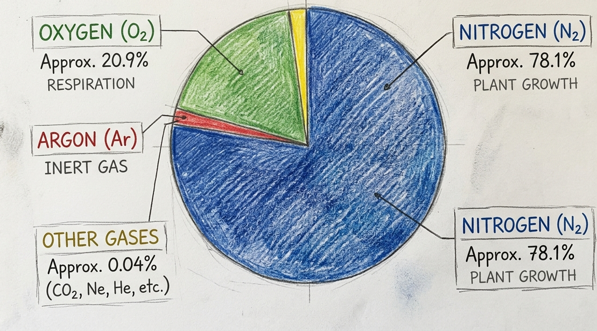
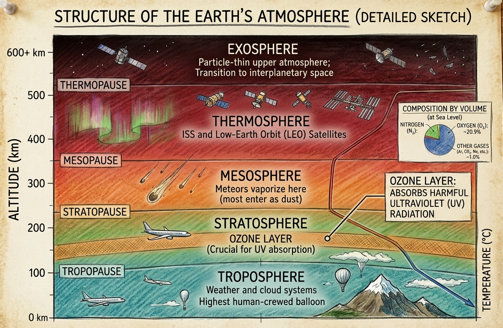

Social Studies class 9 Atmosphere and Climate
CHAPTER-3
(Atmosphere and Climate)
Questions and Activities
1. What is atmosphere? Explain its composition with the help of a pie diagram.
Answer:
The atmosphere is the envelope or blanket of gases that surrounds the Earth. It is held around the Earth by the force of gravity. The atmosphere protects living organisms from the Sun's harmful ultraviolet rays, regulates the Earth's temperature, and provides the air necessary for life. It also plays an important role in weather, climate, and the water cycle.
The atmosphere is composed of a mixture of gases, water vapour, and dust particles. Nitrogen and oxygen together make up about 99% of the atmosphere, while the remaining gases are present in very small quantities.
Composition of the Atmosphere:
| Gas | Percentage |
|---|---|
| Nitrogen (N₂) | 78% |
| Oxygen (O₂) | 21% |
| Argon (Ar) | 0.93% |
| Carbon Dioxide (CO₂) | 0.04% |
| Other Gases (Neon, Helium, Hydrogen, Ozone, etc.) | 0.03% |
Pie Diagram Showing the Composition of the Atmosphere:

Importance of the Atmosphere:
- Provides oxygen for breathing and carbon dioxide for photosynthesis.
- Protects the Earth from harmful ultraviolet (UV) rays.
- Burns up most meteoroids before they reach the Earth's surface.
- Maintains a suitable temperature for life.
- Supports weather phenomena such as clouds, rainfall, and winds.
2. Draw a labelled diagram of the structure of atmosphere.

3. Which are the four main seasons of India?
Answer:
India experiences four main seasons due to the influence of the monsoon winds and its tropical location. These seasons are:
- Summer Season (March to May): During this season, temperatures are high, especially in the northern and central parts of India. Hot and dry winds called Loo blow over the northern plains.
- South-West Monsoon or Rainy Season (June to September): Moisture-laden south-west monsoon winds bring heavy rainfall to most parts of the country. This is the main rainy season and is essential for agriculture.
- Retreating or North-East Monsoon Season (October to November): During this period, the south-west monsoon winds withdraw from India. The north-east monsoon brings rainfall mainly to the coastal areas of Tamil Nadu and parts of Andhra Pradesh.
- Winter Season (December to February): Temperatures are low, especially in northern India. Most parts of the country experience cool and dry weather, while the Himalayan region receives snowfall.
4. Why do you not feel the pressure of the atmosphere?
Answer:
Although the atmosphere exerts pressure on the Earth's surface and on our bodies, we do not feel it because the pressure inside our body balances the atmospheric pressure outside. This balance prevents us from experiencing any discomfort.
Moreover, atmospheric pressure acts equally in all directions, so there is no unbalanced force acting on our body. Therefore, under normal conditions, we do not feel the weight or pressure of the atmosphere.
5. In which layer of the atmosphere do aeroplanes fly and why?
Answer:
Aeroplanes generally fly in the lower stratosphere.
They fly in this layer because:
- The weather is generally calm and stable.
- Clouds, storms, and turbulence are almost absent.
- The air is thinner, which reduces air resistance and helps save fuel.
- Flying in the stratosphere provides a smoother and safer journey.
6. Distinguish between the following:
(a) The Troposphere and Stratosphere
Answer:
| Troposphere | Stratosphere |
|---|---|
| It is the lowest layer of the atmosphere. | It lies above the troposphere. |
| It extends up to about 8–18 km above the Earth's surface. | It extends from about 18 km to nearly 50 km above the Earth's surface. |
| All weather phenomena such as clouds, rainfall, storms, and winds occur in this layer. | Weather is generally calm and stable in this layer. |
| Temperature decreases with increase in altitude. | Temperature increases with altitude due to the presence of the ozone layer. |
| It contains about 75% of the atmosphere's total mass. | It contains the ozone layer, which absorbs harmful ultraviolet rays. |
(b) The South-West Monsoon and North-East Monsoon
Answer:
| South-West Monsoon | North-East Monsoon |
|---|---|
| Blows from the south-west towards India. | Blows from the north-east towards the Bay of Bengal. |
| Occurs from June to September. | Occurs from October to November. |
| Brings heavy rainfall to most parts of India. | Brings rainfall mainly to Tamil Nadu and the south-eastern coast. |
| It is known as the advancing monsoon. | It is known as the retreating monsoon. |
| It is the main rainy season of India. | It provides winter rainfall to the south-eastern coastal region. |
7. Do it yourself: Table 3.3 shows the average monthly temperatures and rainfall amounts for 10 representative stations. Study these figures on your own and convert them into ‘temperature and rainfall’ graphs. The visual representations will help you grasp their similarities and differences at a glance. One such graph (Fig. 3.14) is already prepared for you. See if you can arrive at some broad generalisations about our diverse climatic conditions.
Ans. This is a classroom activity. Students are advised to complete it by themselves under the guidance of their teacher.